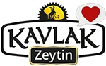
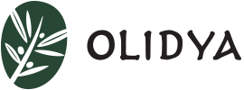
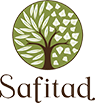
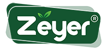

Premium / Butik
Premium ve butik üretim odaklı zeytinyağı markaları, erken hasat ve sınırlı seri ürünleriyle öne çıkar.
Premium / Butik odaklı zeytinyağı markaları, benzer bölgeler ve ilgili zeytin çeşitleri. 165 marka listesi.
Bu Sayfadaki Markalar
Adatepe
Kazdağları eteklerinde üretim yapan köklü marka. Taş baskı ve natürel sızma zeytinyağı çeşitleriyle bilinir....
Hatnar
Erzin, Hatay merkezli üretici marka. Soğuk sıkım natürel sızma zeytinyağı ve yöresel zeytin ürünleri sunar....
Laleli
Ödüllü Türk zeytinyağı markası. Uluslararası yarışmalarda çok sayıda altın madalya kazanmıştır. Erken hasat natürel sızma zeytinyağları ile bilinir....
Mera Ovası
Marmara bölgesinde, Erdek çevresindeki Gemlik tipi zeytinlerden butik üretim yapan artizanal zeytinyağı markası. Küçük partiler halinde soğuk sıkım natürel sızma zeytinyağı üretir....
Nermin Hanım Zeytinliği
Ayvalık merkezli butik üretici. Erken hasat ve izlenebilir üretim yaklaşımıyla natürel sızma ürünler sunar....
NovaVera
Kuzey Ege merkezli butik üretici. Erken hasat, soğuk sıkım ve yüksek polifenol odaklı natürel sızma zeytinyağlarıyla bilinir....
Oleamea
Premium segment Türk zeytinyağı markası. Uluslararası yarışmalarda ödüller kazanmıştır. Erken hasat, yüksek polifenollü natürel sızma zeytinyağları sunar....
Vivax Olea
Şarköy, Tekirdağ hattında üretim yapan marka. Kontinü sistem ve soğuk sıkım serileriyle Trakya'da öne çıkar....
Zetiya
Hatay odaklı erken hasat natürel sızma serileriyle öne çıkan butik marka. Cam şişe ve teneke ambalajlı ürünler sunar....
Adrasos
Mut bölgesinden premium natürel sızma serileri sunan marka. Cam ve galon ambalajlı zeytinyağlarıyla öne çıkar....
Akey Çatal Zeytin
Akey Çatal Zeytin - Doğal Zeytinyağı...
Alhatoğlu Zeytinyağları
Sofralık zeytin kalitesinde zeytinlerden elde ettiğimiz düşük asitli ve yüksek kaliteli zeytinyağlarımız sofralarınızın vazgeçilmezi olacak......
Ali Kemal Bey
Ali Kemal Bey, Ayvalık, Balıkesir çizgisinde natürel sızma ve özel seri zeytinyağı sunan üretici olarak öne çıkar....
Anafortis
Eceabat çıkışlı, ödüllü erken hasat natürel sızma zeytinyağlarıyla tanınan butik üretici....
Anolive
Ayvalık bölgesinde premium natürel sızma zeytinyağı üretimi yapan marka....
Armolia
Armolia, Selçuk, İzmir hattında Arbequina zeytinlerinden hazırlanan 2025 Gold ödüllü natürel sızma zeytinyağıdır....
Armutlu Zeytincilik
Armutluzeytincilik.com...
Artem Oliva
Butik üretim odaklı natürel sızma zeytinyağı markası....
Asiltane
Soğuk sıkım ve özel hasat serileri sunan natürel sızma üreticisi. Farklı hacimlerde premium zeytinyağı çeşitleri hazırlar....
Asiltane Limited Özel Hasat
Asiltane Limited Özel Hasat, Aydın, Ege hattında Edremit zeytinlerinden hazırlanan 2025 Gold ödüllü natürel sızma zeytinyağıdır....
Ayolis
Ayvalık bölgesinden premium natürel sızma zeytinyağı üreten marka....
Ayvada
1925’ten beri 4 kuşaktır Ayvalık’ta kendi zeytinliğinden üretilen tek bahçe erken hasat soğuk sıkım natürel sızma zeytinyağı. Gerçek zeytinyağını keşfedin....
Bella Mordane
Bella Mordane'nin yüksek polifenollü, düşük asit oranlı zeytinleri ile tanışın. İlk ve erken hasat zeytinyağlarımız soğuk sıkım yöntemiyle elde edilir....
Bella Mordane Arbequina
Bella Mordane Arbequina, Akhisar, Manisa hattında Arbequina zeytinlerinden hazırlanan 2025 Gold ödüllü natürel sızma zeytinyağıdır....
Berolivo
Eceabat çıkışlı sürdürülebilir ve yüksek kaliteli natürel sızma zeytinyağı üreten butik marka....
Bireller Olive
Bireller Olive - Zeytin, Zeytinyağı ve Doğal Zeytinyağlı Kozmetik ürünleri üretim ve satışı, Taş kırma soğuk sıkım Ayvalık Edremit Burhaniye Altınova zeytinlerinden elde edilen sız...
Birsen Hanım Arbequina
Birsen Hanım Arbequina, Köprübaşı, Manisa hattında Arbequina zeytinlerinden hazırlanan 2025 Gold ödüllü natürel sızma zeytinyağıdır....
Bozelli
Akhisar çıkışlı ödüllü natürel sızma zeytinyağlarıyla bilinen aile üreticisi. Kendi bahçelerinden gelen ürünleri vurgular....
Bozelli Picual
Bozelli Picual, Akhisar, Manisa hattında Picual zeytinlerinden hazırlanan 2025 Gold ödüllü natürel sızma zeytinyağıdır....
Buta Assos
Assos bölgesinde üretilen zeytinlerden premium natürel sızma zeytinyağı sunan marka....
BÜKEM ZEYTİNYAĞLARI
BÜKEM ZEYTİNYAĞLARI, Akhisar, Manisa çizgisinde natürel sızma ve özel seri zeytinyağı sunan üretici olarak öne çıkar....
By TEO
Edremit'in En Lezzetli Zeytinyağları'ndan Sofranıza | Byteo Zeytincilik – Mükemmel Nefaset Sofralarınızda...
Çobanöz Zeytincilik
Edremit Zeytini Online Satış Mağazası | Edremit Zeytin & Zeytinyağları Satış Pazarlama Sitesi...
Çoral
Eceabat çıkışlı ödüllü natürel sızma zeytinyağı serileri sunan butik üretici....
Dardanos Fine Foods
Gerçek meyvelerle üretilen 12 farklı çeşnili ve naturel sızma zeytinyağları. Sofranıza şıklık katan tatlar. İlk siparişe özel %10 indirimle hemen keşfedin....
Dem Green
Dem Green, Urla, İzmir çizgisinde natürel sızma ve özel seri zeytinyağı sunan üretici olarak öne çıkar....
Dervişoğlu Zeytin
Dervişoğlu Zeytin, Gemlik zeytininden elde edilen zeytinyağları ve özenle hazırlanmış doğal zeytin çeşitleriyle sofralarınızı şenlendiriyoruz....
Dono Terra
Dono Terra zeytinyağları, ödüllü erken hasat ve olgun hasat seçenekleriyle doğanın en saf lezzetini sofralarınıza getiriyor. Uluslararası kalite standartlarına sahip zeytinyağlarım...
Drop
Drop Zeytin ve Zeytinyağları Altınoluk / Balıkesir...
Eminems Olive Oil
Eminems Olive Oil, Milas, Muğla çizgisinde natürel sızma ve özel seri zeytinyağı sunan üretici olarak öne çıkar....
ERGENECİ ZEYTİNCİLİK
Ergeneci Zeytincilik – Ayvalık Natürel Sızma Zeytinyağı...
Eşref Bey Zeytincilik
Taze, Aromatik ve Nitelikli Erken Hasat Naturel Sızma Zeytinyağı Deneyimi şimdi www.esrefbeyzeytincilik.com...
Evliyazade
Evliyazade Ayvalık Zeytinyağı -- 1886 yılında Evliyazade Şakir Efendi tarafından kurulan, Evliyazade zeytinyağı fabrikası, Edremit...
Fayton
Ege vurgusuyla erken hasat ve soğuk sıkım natürel sızma zeytinyağı sunan butik üretici. Doğallık ve geleneksel üretim diliyle öne çıkar....
Fayton Ayvalık
Fayton Ayvalık, Ayvalık, Balıkesir hattında Ayvalik zeytinlerinden hazırlanan 2026 Silver ödüllü natürel sızma zeytinyağıdır....
Funoli
Milas Memecik zeytininden üretilen natürel sızma zeytinyağı sunan butik üretici. Soğuk sıkım ve yüksek polifenol vurgusuyla bilinir....
Funoli Göldere
Funoli Göldere, Milas, Muğla hattında Memecik zeytinlerinden hazırlanan 2026 Gold ödüllü natürel sızma zeytinyağıdır....
Gaia Oliva
Ayvalık hattında üretim yapan marka. Natürel sızma ve özel seri zeytinyağı ürünleri sunar....
Galli Premium
Eceabat Çan Ovası mevkiinden natürel sızma zeytinyağı üreten butik marka....
Gallipolive
Eceabat üretim tesislerinde soğuk pres natürel sızma zeytinyağı hazırlayan butik marka....
Ganos Olive Oil
Ganos Olive Oil, Ayvalık, Balıkesir çizgisinde natürel sızma ve özel seri zeytinyağı sunan üretici olarak öne çıkar....
Garisar
Yüksek polifenollü ve ödüllü natürel sızma zeytinyağı da sunan gurme üretici. Arbequina odaklı premium seriyle dikkat çeker....
Gourmet Selection Domat
Gourmet Selection Domat, Akhisar, Manisa hattında Domat zeytinlerinden hazırlanan 2025 Gold ödüllü natürel sızma zeytinyağıdır....
Gourmet Selection Early Harvest Trilye
Gourmet Selection Early Harvest Trilye, Akhisar, Manisa hattında Trilye zeytinlerinden hazırlanan 2025 Silver ödüllü natürel sızma zeytinyağıdır....
Granpa
Marmara bölgesi odaklı üretici marka. Trilye/Gemlik hattında natürel sızma ürünleriyle öne çıkar....
Granpa Gold
Granpa Gold, Bursa, Marmara hattında özenle seçilen zeytinlerden hazırlanan 2025 Gold ödüllü natürel sızma zeytinyağıdır....
Granpa Memecik
Granpa Memecik, Bursa, Marmara hattında Memecik zeytinlerinden hazırlanan 2025 Gold ödüllü natürel sızma zeytinyağıdır....
Granpa Premium Trilye
Granpa Premium Trilye, Bursa, Marmara hattında Trilye zeytinlerinden hazırlanan 2025 Gold ödüllü natürel sızma zeytinyağıdır....
HAS PREMIUM
Has Premium: Yeşil Zeytin, Siyah Zeytin - Natürel Sızma Zeytinyağ Çeşitleri...
Hasada
Hasada, Ayvalık, Balıkesir çizgisinde natürel sızma ve özel seri zeytinyağı sunan üretici olarak öne çıkar....
Hellenia
Hellenia, Altınözü, Hatay çizgisinde natürel sızma ve özel seri zeytinyağı sunan üretici olarak öne çıkar....
Hermus
Akhisar ve çevresindeki zeytinlerden üretilen premium natürel sızma zeytinyağı markası....
Hilmi Yıldırım Zeytinyağları
Hilmi Yıldırım Zeytinyağları, Aydın, Ege çizgisinde natürel sızma ve özel seri zeytinyağı sunan üretici olarak öne çıkar....
İlyada
Çanakkale Geyikli'den kaliteli Türk zeytinyağı markası. Natürel sızma zeytinyağı ve sofralık zeytin çeşitleri sunar....
İmbatto
Ayvalık hattından natürel sızma çeşitleri sunan üretici. Online satışta farklı şişe ve teneke seçenekleri bulunur....
İznik Zeytin Evi
Zeytin ve Zeytinyağı’nın en doğal halini bulmak için çıktık yola… Katkısız, doğal ve sağlıklısını… Günümüzün endüstriyelleşmiş ürünlerine inat sabırla aradık en bozulmamış olanını…...
İzorya
Sağlığın İksiri Zeytinyağı İzorya...
Josevia
Ayvalık çevresindeki zeytinlerden sürdürülebilir üretim anlayışıyla natürel sızma sunan premium çizgi. Erken hasat ve soğuk sıkım ürünleriyle bilinir....
Kaleboğazı
Yolu soframızdan geçen sevdiklerimizden aldığımız talepler üzerine, kendimiz için ürettiğimiz bu mucizevi lezzeti, siz ve ailenizle de aynı özenle buluşturmak için Kaleboğazı zeyti...
Karadane
Karadane, Çanakkale çizgisinde natürel sızma ve özel seri zeytinyağı sunan üretici olarak öne çıkar....
Kavaki
Erdek çıkışlı erken hasat natürel sızma zeytinyağı serileriyle öne çıkan butik üretici....
Kavalan Zeytinyağları
Üreticiden; aracısız, doğal, lezzetli ve kaliteli Kuzey Ege Ayvalık erken hasat soğuk sıkım hakiki zeytinyağı. Yüksek meyvemsi koku, düşük asit katkısız hakiki zeytinyağı......

Premium / ButikKavlak
Kavlak Zeytin - Kavlak Zeytinyağı | Taş Baskı Zeytinyağı Üretim Tesisleri...
Kesebir
Kesebir, Ayvalık, Balıkesir çizgisinde natürel sızma ve özel seri zeytinyağı sunan üretici olarak öne çıkar....
Kirte
Eceabat Alçıtepe çıkışlı natürel sızma zeytinyağları sunan yerel üretici....
Kius
Kius Zeytin ve Zeytinyağı Gemlik’in bereketli Umurbey zeytinliklerinden sofralarınıza doğal lezzet ve sağlık getiriyor. Kius Zeytin ve Zeytinyağı, kalite odaklı ürünleri size sunuy...
Kozoliv
Gömeç merkezli Kuzey Ege üreticisi. Üç nesillik aile mirası, erken hasat ve natürel sızma serileriyle öne çıkar....
Kue Olive Oil
Ödüllü Premium Erken Hasat Soğuk Sıkım Natürel Sızma Zeytinyağını Keşfetmek ve Hemen Satın Almak için kueolive.com Adresini Ziyaret Edebilirsiniz....
Küçükbahçe
Karaburun çevresinden naturel sızma zeytinyağları sunan, geleneksel lezzet vurgulu butik üretici....
Lamponia
Ayvacık Kozlu çıkışlı erken hasat natürel sızma zeytinyağlarıyla öne çıkan aile üretimi butik marka....
Lovida
Ayvalık Zeytinyağı ve Zeytin üreticisi Lovida. 4 nesildir zeytincilik yapan bir ailenin mükemmeli arama hikayesi....
Luxe
Luxe, Ayvalık, Balıkesir hattında Ayvalik zeytinlerinden hazırlanan 2026 Gold ödüllü natürel sızma zeytinyağıdır....
Malhun Hatun
Malhun Hatun, Bursa, Marmara çizgisinde natürel sızma ve özel seri zeytinyağı sunan üretici olarak öne çıkar....
MASMANA
Kilis kökenli dördüncü nesil aile üreticisi. Organik ve natürel sızma odaklı, erken hasat ve özel seri yağlarıyla öne çıkar....
Mavras
Urla merkezli butik marka. Sınırlı seri ve erken hasat natürel sızma zeytinyağı üretimi yapar....
Mekece Işık
Mekece Işık, Urla, İzmir çizgisinde natürel sızma ve özel seri zeytinyağı sunan üretici olarak öne çıkar....
Mete Zeytin
Gemlik siyah zeytin, yeşil zeytin ve zeytinyağları. (250-290) Kalibre, lezzet dolu, sofranız için köyünden özel mahsul....
Milasso
Milas çıkışlı yüksek polifenollü premium natürel sızma üreticisi. Erken hasat soğuk sıkım ve hediyelik seri seçenekleri sunar....
Miranda
Miranda Zeytin Ürünleri...
Mirliya
Mirliya, zeytin ve zeytinyağı alanında kaliteyi ve doğallığı buluşturan öncü markalardan biridir. Natürel zeytinyağı çeşitleriyle hem lezzet hem sağlık arayan sofraların vazgeçilme...
Miryağ
Miryağ, Mudanya, Bursa çizgisinde natürel sızma ve özel seri zeytinyağı sunan üretici olarak öne çıkar....
MonOlive
Premium zeytinyağı markası. Tek çeşit zeytinlerden üretilen butik natürel sızma zeytinyağları sunar....
Monteida
Zeytinyağı, Ayvalık zeytinlerinden soğuk sıkım, doğal, saf ve lezzetli Erken Hasat ve Natürel Sızma Zeytinyağı. Online Alışveriş, 2 günde teslimat....
Murat Zeytinyağı
Murat Zeytinyağları...
Mutili
Mut merkezli modern üretici marka. Cam şişe ve teneke ambalajlı natürel sızma serileri sunar....
Nar Gourmet
Premium gıda markası olup zeytinyağı portföyü de bulunur. Türk lezzetlerini dünyaya tanıtan ödüllü markadır....
Naturale
Naturale, Ayvalık, Balıkesir çizgisinde natürel sızma ve özel seri zeytinyağı sunan üretici olarak öne çıkar....
Nermin Hanım Zeytinliği Edremit
Nermin Hanım Zeytinliği Edremit, Edremit, Balıkesir hattında Edremit zeytinlerinden hazırlanan 2025 Gold ödüllü natürel sızma zeytinyağıdır....
Nidazeytin
Nida Zeytin ve Zeytinyağları Balikesir Edremit Zeytinlide Butik çalişan bir zeytin işletmesidir....
Nilbağ
Nilbağ Zeytinyağları, Ayvalık’ın bereketli zeytinlerinden elde edilen %100 doğal, erken hasat ve soğuk sıkım zeytinyağı ile gurme ürünler sunar. Sağlıklı yaşam için katkısız, yükse...
Nima Gurme
Doğal ve katkısız gıda ürünleriyle sağlıklı beslenin! Fındık, fıstık, badem, ceviz, bal, reçel, zeytin, zeytinyağı, pekmez, tahin, kuru meyve, kahve ve daha ......
Nish Olive
Premium butik zeytinyağı markası. Sınırlı üretimli, özenle seçilmiş tek çeşit zeytinlerden yüksek kaliteli natürel sızma zeytinyağı üretir....
Olea Aera
Olea Aera Soğuk Sıkım Zeytinyağı. Biz Olea Aera' yız. Ayvalık'tan hayatınızda doğal olana bir pencere açmaya, kişisel Zeytin Çağı’ nızı başlatmaya, bu yolculukta bize eşl...
Olea Prilis
Premium butik zeytinyağı markası. Uluslararası kalite standartlarında, düşük asitli natürel sızma zeytinyağı üretir....
Oleavia South Aegean Special
Oleavia South Aegean Special, Milas, Muğla hattında Memecik ve Ayvalık zeytinlerinden hazırlanan 2025 Silver ödüllü natürel sızma zeytinyağıdır....
OleTurk
Milas ve Ege havzasından zeytinlerle üretim yapan marka. Natürel sızma odaklı ürün portföyü sunar....

Premium / ButikOlidya
Olidya, Gemlik, Bursa çizgisinde natürel sızma ve özel seri zeytinyağı sunan üretici olarak öne çıkar....
Oliella
Seferihisar çıkışlı erken hasat, soğuk sıkım natürel sızma zeytinyağları sunan butik üretici....
Olimilas
Doğanın kadim mirası zeytinden gelen mucize. Saf, doğal, sağlıklı, coğrafi işaretli zeytinyağı....
Olistica
Butik üretim yapan premium zeytinyağı markası. Sınırlı sayıda üretilen, tek çeşit (monocultivar) zeytinyağları ile tanınır....
Oliva Malia
Karaburun Yarımadası çıkışlı natürel sızma zeytinyağları sunan butik üretici. Ayvalık, Erkence ve yarımada serileri bulunur....
Olivamore
Butik üretim anlayışına sahip zeytinyağı markası. Erken hasat natürel sızma ürünleri sunar....
Olive811
Olive 811, Tek Bahçe konseptini benimsemiş, doğal sofralık zeytin ve düşük asit, erken hasat, soğuk sıkım natürel sızma zeytinyağı markasıdır....
OliveOilsLand
Zeytinyağı ürünlerinde premium ve butik segmentte yer alan marka....
Olivnia Zeytinyağı
“Gemlik” cinsi zeytin fidanlarımızı da dikerken kendimiz ve ailemiz için yola çıkmıştık. Sevgi ile büyüyen ağaçlarımız bize sevginin karşılığını fazlasıyla vermeye başlayınca “Oiiv...
Olivogue
Oli Vogue'un 7 kuşak Girit mirasıyla; en iyi Trilye zeytinlerinden soğuk sıkım yöntemiyle üretilen yüksek kaliteli zeytinyağlarını bugün keşfedin....
Olivos
Zeytinyağı bazlı ürünleriyle tanınan Türk markası. Zeytinyağı satışının yanı sıra zeytinyağlı sabun ve kozmetik ürünleri de üretir....
Olivurla
Urla bölgesinden premium zeytinyağı üreten butik marka. Urla'nın eşsiz mikro ikliminde yetişen zeytinlerden üretim yapar....
Olivya Gökçeovacık
Milas bölgesinde faaliyet gösteren butik marka. Yöresel karakterli natürel sızma zeytinyağı üretir....
On7 Zeytinyağı
Çanakkale yöresindeki kendi zeytinlerinden soğuk sıkım natürel sızma zeytinyağı üreten butik marka....
Onursel Zeytincilik
Onursel Zeytinyağları – Dalından Sofraya Gurme Zeytin Ürünleri...
Orfion
Ayvalık'ın bereketli topraklarından sofralarınıza, erken hasat ve soğuk sıkım premium zeytinyağları. Doğal lezzet, geleneksel üretim....
Oro di Milas
Milas bölgesinde aileye ait modern tesiste üretim yapan premium üretici. Coğrafi işaretli natürel sızma çizgisi ve kadın girişimciliği vurgusuyla öne çıkar....
OVE Foods
Zeytin ve zeytinyağı odaklı gıda markası. Natürel sızma ve gurme segment ürünler sunar....
Ölberg Milet
Milet bölgesinden erken hasat ve soğuk ekstraksiyon premium zeytinyağı üretir. Yüksek polifenol ve uluslararası ödül diliyle öne çıkar....
Özgün Olive
Butik üretim yapan zeytinyağı markası. Soğuk sıkım natürel sızma zeytinyağı ve aromatik zeytinyağı çeşitleri sunar....
Palamidas
Akhisar merkezli aile üreticisi. Soğuk sıkım natürel sızma ve organik serileriyle öne çıkar; resmi mağazasında cam şişe ve teneke seçenekleri sunar....
Pazarbaşılar
Eceabat ve Gelibolu Yarımadası çevresinden natürel sızma zeytinyağları sunan köklü üretici....
Pidasus
Pidasus – Doğal Zeytin ve Zeytinyağları...
PİR OLIVE OIL
Pir Olive Oil. Zeytinyağı. Erken hasat sızma zeytinyağı, natürel sızma zeytinyağı...
Ravla Gurme
Yüksek polifenollü ve ödüllü zeytinyağı serileri hazırlayan gurme üretici. Anadolu süper gıdaları yanında zeytinyağı seçkisiyle de öne çıkar....
Riccolivo
Riccolivo Premium Erken Hasat Naturel Sızma Zeytinyağı, Kaz Dağları’nın oksijene doymuş zeytin ağaçlarından elde edilen exclusive bir zeytinyağıdır. Yemekler ve salatalar için müke...
Roda Farm
Roda Farm kalitesiyle çeşnili zeytinyağı, natürel zeytinyağı ve nar ekşisi lezzetlerini hemen keşfedin. Hızlı kargo ile uygun fiyatlı gurme lezzetleri deneyimleyin....
Rumeli Zeytincilik
Yüksek polifenollü zeytinyağı, Soğuk Sıkım Aromalı Zeytinyağı.Nefis iri Şarköy Zeytini,soğuk sıkım aromalı gurme zeytinyağı, sofralık siyah zeytin. doğal zeytin...
Safitad
Erken hasat, olgun hasat ve private reserve serileri sunan natürel sızma odaklı üretici. Kendi bahçeleri ve tesis anlatımıyla premium çizgi kurar....
Safitad Early Harvest
Safitad Early Harvest, Çanakkale hattında Ayvalik zeytinlerinden hazırlanan 2025 Gold ödüllü natürel sızma zeytinyağıdır....

Premium / ButikSafitad Private Reserve
Safitad Private Reserve, Çanakkale hattında Domat zeytinlerinden hazırlanan 2026 Gold ödüllü natürel sızma zeytinyağıdır....
Sakallı Zeytincilik
Akçay Sakallı Zeytincilik Edremit Körfezinin En Köklü Zeytincilerindendir. Zeytin ile Sofralarınıza Sağlık, Lezzet ve Doğallık Getiriyoruz....
Semylasa
Milas yöresinden üretim yapan premium marka. Natürel sızma zeytinyağı çeşitleriyle öne çıkar....
Seosfarm
Seferihisar hattında erken hasat ve özel seri natürel sızma zeytinyağları geliştiren üretici....
Solive
Gemlik zeytini ve erken hasat zeytinyağı serileriyle öne çıkan bölgesel marka. Zeytin Ağacı mağaza yapısı içinde satış yapar....
Somak
Somak Zeytincilik, Ayvalık ve Kuzey Ege’nin doğal zeytinlerinden üretilen natürel sızma zeytinyağı ve zeytin çeşitlerini sofranıza taşır....
Taşaltı
Kuşaklar öncesine dayanan bir miras bu. Türkiye’nin ilk zeytinyağı fabrikasında çalışan büyük dedemiz ile başladı ve bize bırakmak istediği miras, kendi sofralarımıza ailemize çocu...
Terra Arteka
Erdek çıkışlı yüksek polifenollü erken hasat natürel sızma zeytinyağı üreten butik marka....
Terra Vigla
Sakallı Gıda Tarım Turizm İşletmelerine ait arazilerden toplanan zeytinlerden üretilmiş Ayvalık zeytin ve zeytinyağı ürünleri....
The Mill
350 yıllık tarım geleneği, teknoloji ile buluştu. Zeytinyağı, zeytin, tahin, pekmez ve çok daha fazlası The Mill uzmanlarının üretimiyle sizlere sunuluyor. The Mill, ihtiyacınız ol...
True Olive Private Reserve
True Olive Private Reserve, Edremit, Balıkesir hattında Edremit zeytinlerinden hazırlanan 2026 Gold ödüllü natürel sızma zeytinyağıdır....
Tuna Zeytincilik
Edremit Körfezinin bereketli topraklarından özenle seçtiğimiz zeytinlerle elde edilen ödüllü zeytinyağlarımızla dört kuşaktır sofralarınıza misafir olmaktan gurur duyuyoruz. Kalite...
Ustalı
Ustalı, Ayvalık, Balıkesir çizgisinde natürel sızma ve özel seri zeytinyağı sunan üretici olarak öne çıkar....
Velvet
Bursa hattında Gemlik tipi zeytinlerden üretim yapan üretici. Orhangazi-İznik çevresindeki zeytinlerden natürel sızma seriler sunar....
Verde
Kuzey Ege odaklı zeytinyağı markası. Erken hasat natürel sızma ve farklı ambalaj seçenekleriyle öne çıkar....
Veysel Kaptan
Ayvalik – Ayvalik Zeytinyagi...
Vievi
Aydın Karacasu’da Türkiye’nin yüksek rakımda en büyük zeytin bahçesinden elde edilen, yüksek polifenol değerine sahip, altın madalyalı, soğuk sıkım Vievi zeytinyağları sofranıza ve...
Villa Turqan
Soğuk sıkım natürel sızma serileri ve aromalı ürünleri bulunan butik üretici. Bahçeden birkaç saat içinde sıkım vurgusuyla dikkat çeker....
Yasemin Hanım Zeytinyağları
Yasemin Hanım Zeytinyağları...
Zagoda
Ödüllü natürel sızma zeytinyağlarıyla öne çıkan üretici. Erken hasat ve özel seri şişeleriyle premium segmentte yer alır....
Zagoda Arbequina
Zagoda Arbequina, Akhisar, Manisa hattında Arbequina zeytinlerinden hazırlanan 2025 Silver ödüllü natürel sızma zeytinyağıdır....
Zagoda Ayvalık
Zagoda Ayvalık, Akhisar, Manisa hattında Ayvalik zeytinlerinden hazırlanan 2026 Gold ödüllü natürel sızma zeytinyağıdır....
Zagoda Trilye
Zagoda Trilye, Akhisar, Manisa hattında Trilye zeytinlerinden hazırlanan 2026 Silver ödüllü natürel sızma zeytinyağıdır....
ZenOlive
Edremit tipi Ayvalık zeytinlerinden soğuk sıkım yağ üreten küçük ölçekli üretici. Tek bahçe ve iyi tarım vurgusuyla öne çıkar....
Zest Ayvalık
Zest Ayvalık - Erken Hasat Soğuk Sıkım Gerçek Ayvalık Zeytinyağı...
Zethoveen
Soğuk sıkım ve erken hasat natürel sızma zeytinyağı sunan premium üretici. Doğal üretim dili ve özel seri yaklaşımıyla tanınır....

Premium / ButikZeyer Zeytincilik
Bursa Mudanya Tirilye yöresinin En kaliteli Katkısız Doğal Zeytin ve Zeytinyağı...
ZEYTİNİN TÜRKÜSÜ
Zeytinin Turkusu...
Zeytunç Olive
Erken hasat soğuk sıkım Ayvalık zeytinyağı ile sofralarınıza gerçek lezzet katın. %100 doğal, yoğun aromalı ve taze üretim....